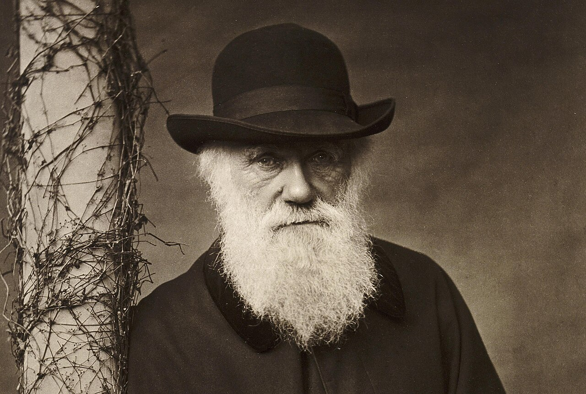

植物生长素（上）：生长素的发现
本期导读
植物生长素（上）· 经典实验 · 向光性

视频原话 · 导读3 句
- 同学们好！这节课梳理人教版选择性必修一第五章第一节的上半部分——生长素的发现。8.4s
- 这一节是经典的实验史，高考常考每个实验的结论、向光性的原因，以及判断胚芽鞘怎样生长。9.0s
- 我们按八个考点梳理，每个考点都讲清楚怎么考、怎么做。5.5s
达尔文的实验01#
向光弯曲
不生长不弯曲
直立生长
向光弯曲
感光部位：尖端；弯曲部位：尖端下面的一段；尖端向下传递某种“影响”
易错
达尔文没有发现生长素，只提出“某种影响”；锡箔的作用是遮光
视频原话5 句
- 考点一，达尔文的实验。照片中就是达尔文，1880年，他用禾本科植物的胚芽鞘研究植物的向光性。10.2s
- 单侧光照射，胚芽鞘向光弯曲生长；去掉尖端，胚芽鞘既不生长，也不弯曲。7.9s
- 用锡箔罩住尖端，胚芽鞘直立生长；用锡箔罩住尖端下面的一段，胚芽鞘仍然向光弯曲。8.9s
- 结论：感受光刺激的部位是尖端，向光弯曲的部位是尖端下面的一段。达尔文推想，尖端受单侧光刺激后，向下面传递了某种“影响”。12.9s
- 易错：达尔文只提出了“某种影响”，并没有发现生长素；实验中锡箔的作用是遮光。7.9s
鲍森·詹森的实验02#
向光弯曲
不生长不弯曲
结论：尖端产生的影响可以透过琼脂片传递给下部
琼脂片：化学物质能通过
云母片：化学物质不能通过
云母片：化学物质不能通过
考法
琼脂片换成云母片 → 影响无法向下传递 → 胚芽鞘不生长也不弯曲
视频原话4 句
- 考点二，鲍森·詹森的实验。他切下胚芽鞘的尖端，在尖端和下部之间隔一块琼脂片，再用单侧光照射。10.2s
- 结果胚芽鞘仍然向光弯曲生长。3.5s
- 结论：胚芽鞘尖端产生的影响可以透过琼脂片传递给下部。6.1s
- 考法：如果把琼脂片换成云母片，影响不能透过，胚芽鞘就不生长也不弯曲。琼脂片能让化学物质通过，云母片不能。11.8s
拜尔的实验03#
黑暗中
尖端在左 → 弯向右
尖端在右 → 弯向左
切下尖端，放在切面的一侧
结果：弯向放尖端的对侧
结论：弯曲生长是因为尖端产生的影响在下部分布不均匀
易错
在黑暗中进行，目的是排除光照的影响
视频原话4 句
- 考点三，拜尔的实验。他切下胚芽鞘的尖端，把尖端放在切面的一侧，在黑暗中培养。8.7s
- 结果胚芽鞘向放尖端的对侧弯曲生长。4.1s
- 结论：胚芽鞘的弯曲生长，是因为尖端产生的影响在其下部分布不均匀造成的。7.8s
- 易错：拜尔的实验要在黑暗中进行，目的是排除光照的影响，说明弯曲不是光直接造成的。9.1s
温特的实验04#
→
弯向对侧
不生长不弯曲
结论：弯曲生长由一种化学物质引起
温特命名为生长素
温特命名为生长素
考法
空白琼脂块：排除琼脂块本身的影响；温特没有提取出生长素
视频原话5 句
- 考点四，温特的实验。他把切下的胚芽鞘尖端放在琼脂块上，几小时后移去尖端。8.3s
- 把这块琼脂块放在去掉尖端的胚芽鞘切面的一侧，胚芽鞘向对侧弯曲生长。7.3s
- 对照组放没有接触过尖端的空白琼脂块，胚芽鞘既不生长也不弯曲。6.6s
- 结论：胚芽鞘的弯曲生长，确实是由一种化学物质引起的，温特把它命名为生长素。8.2s
- 考法：空白琼脂块的作用是排除琼脂块本身的影响；温特没有提取出生长素，也不知道它的化学本质。9.7s
生长素的化学本质05#
1880
达尔文
尖端产生某种“影响”
1910
鲍森·詹森
影响可透过琼脂片
1914
拜尔
影响在下部分布不均
1926
温特
是化学物质，命名生长素
1934
分离鉴定
吲哚乙酸（IAA）
吲哚乙酸（IAA）
主要的生长素
苯乙酸（PAA）
也有生长素效应
吲哚丁酸（IBA）
也有生长素效应
易错
生长素是吲哚乙酸，不是蛋白质；由色氨酸经一系列反应转变而来
视频原话3 句
- 考点五，生长素的化学本质。1934年，科学家从人尿中分离出这种物质，确认它是吲哚乙酸，简称IAA。11.3s
- 后来又发现，植物体内具有生长素效应的物质，还有苯乙酸和吲哚丁酸等。7.2s
- 易错：生长素的化学本质是吲哚乙酸，不是蛋白质；它由色氨酸经过一系列反应转变而来。8.9s
向光性的原因06#
尖端：生长素由向光侧移向背光侧
向光侧：生长素少
背光侧：生长素多
背光侧：生长素多
→
背光侧细胞生长快
向光侧生长慢
→ 弯向光源
向光侧生长慢
→ 弯向光源
易错
单侧光改变分布，不影响合成；感光、横向运输在尖端，弯曲在尖端下部
视频原话5 句
- 考点六，植物向光性的原因。3.2s
- 在单侧光照射下，尖端的生长素由向光侧向背光侧运输，这叫横向运输。7.4s
- 生长素再向下运输到尖端下部，结果背光侧的生长素多于向光侧。6.9s
- 背光侧细胞生长得快，向光侧生长得慢，于是植物弯向光源生长。6.6s
- 易错：单侧光改变的是生长素的分布，不影响生长素的合成；感光和横向运输发生在尖端，弯曲发生在尖端下部。11.3s
植物激素的概念07#
植物体内产生 → 从产生部位运送到作用部位 → 对生长发育有显著影响的微量有机物
生长素
赤霉素
细胞分裂素
脱落酸
乙烯
油菜素内酯
与动物激素不同：植物没有专门的分泌器官
易错
人工合成的2,4-D、萘乙酸不是植物激素，而是植物生长调节剂
视频原话4 句
- 考点七，植物激素的概念：由植物体内产生，能从产生部位运送到作用部位，对植物的生长发育有显著影响的微量有机物。11.4s
- 生长素、赤霉素、细胞分裂素、脱落酸、乙烯和油菜素内酯，都是植物激素。7.8s
- 和动物激素不同，植物没有专门的分泌器官，植物激素由一定部位的细胞产生。7.5s
- 易错：人工合成的2,4-D、萘乙酸等不是植物激素，而是植物生长调节剂，因为它们不是植物体内产生的。10.3s
胚芽鞘生长的判断08#
① 有无生长素来源？无 → 不生长
② 分布均匀 → 直立；不均匀 → 弯向少的一侧
不生长
直立生长
直立生长
弯向左侧
直立生长
解题方法
一看有无生长素来源，二看有无尖端感光，三看能否横向运输
视频原话6 句
- 考点八，判断胚芽鞘的生长和弯曲，是这一节最常考的题型。6.0s
- 第一步，看有没有生长素来源：有尖端，或者有含生长素的琼脂块，才能生长；都没有，就不生长。9.6s
- 第二步，看生长素分布是否均匀：分布均匀就直立生长；不均匀就弯曲生长，弯向生长素少的一侧。10.1s
- 尖端罩上锡箔，或者云母片纵向插入尖端阻断横向运输，即使有单侧光，也直立生长。8.6s
- 含生长素的琼脂块不能感光：放在切面一侧，不论有没有光，都弯向对侧。胚芽鞘匀速旋转，各侧受光均匀，也直立生长。12.4s
- 解题方法：一看有没有生长素来源，二看有没有尖端感光，三看生长素能不能横向运输。三步走完，结果就出来了。11.4s
易错速查✓
先自己判断，再点按钮查看对错与解析。
- 1达尔文的实验发现了生长素说法错误：只提出尖端产生某种“影响”
- 2感受单侧光刺激的部位是胚芽鞘尖端说法正确。
- 3拜尔的实验要在单侧光下进行说法错误：在黑暗中进行，排除光照的影响
- 4温特命名了生长素，但没有提取出它说法正确。
- 5单侧光使向光侧生长素合成减少说法错误：改变的是生长素的分布
- 62,4-D属于植物激素说法错误：属于植物生长调节剂
先找生长素来源，再看分布是否均匀！
视频原话 · 易错速查5 句
- 最后，用六道判断题检验一下。3.6s
- 达尔文的实验发现了生长素？错，他只提出尖端产生某种影响。感受单侧光刺激的部位是胚芽鞘尖端？对。11.7s
- 拜尔的实验要在单侧光下进行？错，要在黑暗中进行。温特命名了生长素，但没有提取出它？对。10.4s
- 单侧光使向光侧生长素合成减少？错，改变的是生长素的分布。2,4-D属于植物激素？错，属于植物生长调节剂。12.4s
- 八个考点串起来：四个经典实验一步步找到生长素，向光性靠生长素分布不均，判断题先找生长素来源，再看分布。掌握这些，生长素的发现就能稳稳拿分！我们下期再见！16.9s
图片来源
图片来源：Wikimedia Commons —— Elliott & Fry《Charles Darwin in 1881》Public domain
Photo: Elliott & Fry, public domain